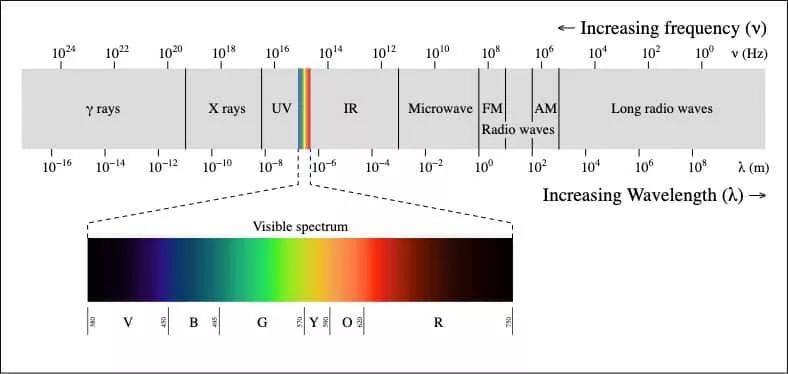
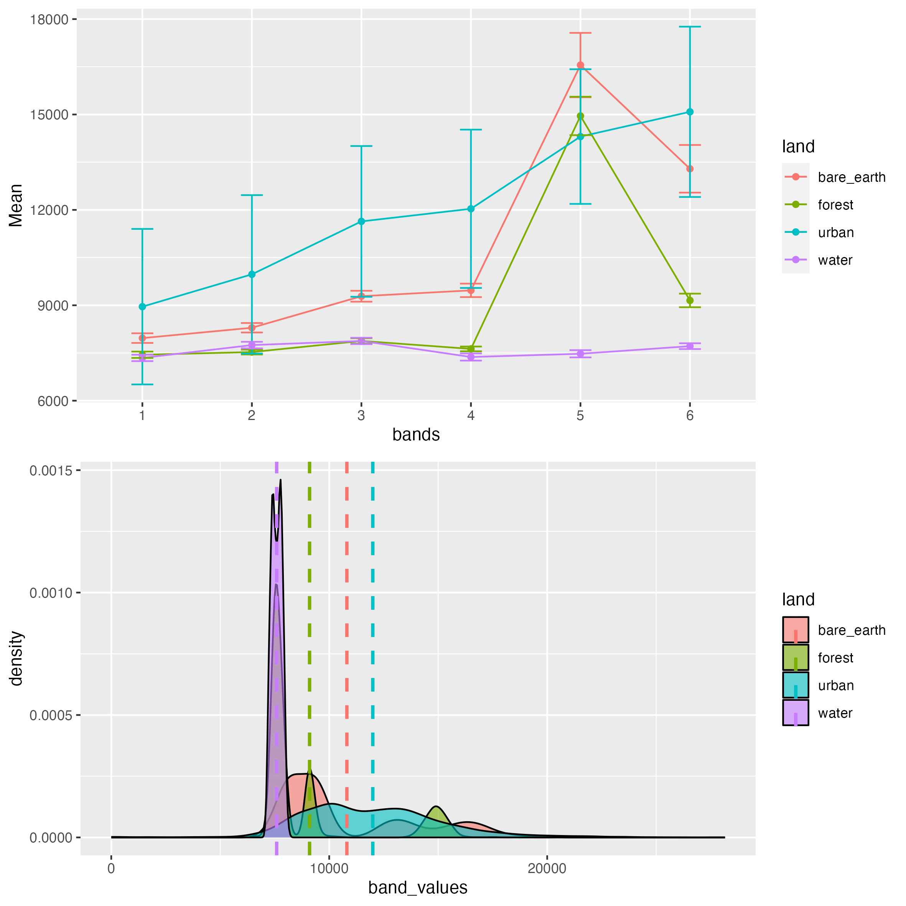

1 Week 1 - Introduction to Remote Sensing
1.1 Summary
In the first week of the module we were introduced to remote sensing, focusing on what satellite imagery is and how it iss collected. The first classification of sensor types, is into passive and active sources, the former use the sun’s energy reflected off the ground, while the latter use their own energy source to send signal to Earth and record it (e.g. SAR). The sensors record the signal by capturing electromagnetic waves, which can have different frequencies, enabling sensors to collect information about things that are not visible to human eye, due to varying spectral signatures of different objects. The figure below shows this spectrum of wavelengths.

We learned there are four resolutions of images captured by satellites - spatial, spectral, radiometric and temporal. Individual bands can be merged to create indices, which show specific characteristics of the Earth’s surface that we want to measure. In a situation where bands are not in the same spatial resolutions, images need to be resampled into the same resolution, in order to be able to work with such data conjointly, either by downscaling or upscaling.
Satellite data, e.g. from Sentinel and Landsat satellites can be freely accessed from the Copernicus Open Access Hub. Software tools like QGIS and SNAP (specifically for Sentinel data) can be used to browse and analyse this data, e.g. for combining different bands to produce desired indices. Examples of such indices include false colour composite, the tasseled cap or atmospheric penetration composite, which allow us to visualise features of the environment that are not observable to the human eye.
1.2 Applications
There are of course countless examples of research that uses remote sensing data. While browsing the literature I came across a project focused on using such data from different sources including Landsat to model the historic Aboriginal foraging habitats in the Australian Western Desert. This was done by assessing water accessibility, vegetation greenness, as well as the land topography, identifying locations where precontact Aboriginal people likely lived (Law et al. 2021). I find projects like this fascinating, as they show that remote sensing data enables us to study topics which would otherwise be impossible or very difficult to understand.
Studies highlight the difficulties and the importance of certain consideration when working with data from satellites. For example, (Li, Saphores, and Gillespie 2015) use remote sensing data at two spatial resolutions - 30m of NDVI index and 0.6m for land cover classification, in order to investigate the economic benefits of urban green space. They show that although the NDVI data is more relevant, the higher resolution land cover is able to more precisely characterise this relationship, which shows the importance of high resolution data, especially when working at a city-scale.
The consideration of spectral resolutions for research likewise is very relevant. By using hyperspectral images at high spatial resolution (Taherzadeh and Shafri 2011) have been able to develop a model for classifying urban materials in Kuala Lumpur. The authors used a Support Vector Machine for this, showing its different predictive ability for different urban materials. The study also then used a Lee filter method to smooth the image, which improved the model’s predictions.
1.3 Reflections
The practical part of this week was focused on getting started with downloading satellite imagery, both Landsat and Sentinel, and familiarising ourselves with the software, which can be used to analyse it. I downloaded Landsat image data for Dunedin, New Zealand from the USGS portal and loaded it in SNAP, as an RGB Image.  I crated small polygons for different types of surfaces like forest, barren earth, water and urban areas, and then opened this in R to examine the reflectance of these land use types for different bands.
I crated small polygons for different types of surfaces like forest, barren earth, water and urban areas, and then opened this in R to examine the reflectance of these land use types for different bands.

The figures above show, e.g. that band 5 has the highest reflectance for all of the selected land types, except water. In band 6 the pixels of the urban area had the highest reflectance. The second plot also shows how these classes vary, and we can see that water is most consistent, while urban and bare earth seem to have the most varying values of pixels. These values, of course depend on the polygons that were selected.
Having a practical example of a satellite image, was very helpful to realise what this data looks like and how it can be analysed. It was certainly an important realisation that working with this single, relatively small image requires a lot of memory for processing, which made me appreciate more the abilities of cloud computing for remote sensing data, especially when working on a larger scale, and with higher spatial and spectral resolutions data.
When thinking about the vastness of available satellite imagery data, it’s easy to get overwhelmed. Before beginning to use such data for research questions, I definitely feel that it’s good to know how these sensors collect the data, why there are different bands, what they represent etc. As working with such data locally is naturally, rather difficult due to their size and computational expense needed to process them, I am curious to learn more about the cloud tools like GEE.